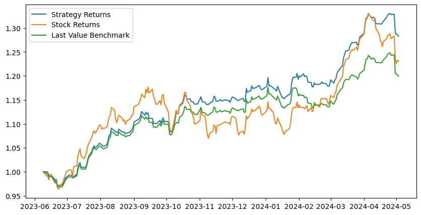
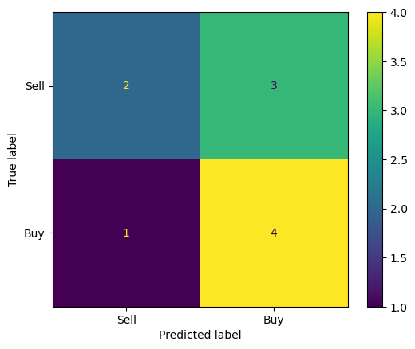

We applied machine learning methods to predict daily stock price movements in a basket of 10 US-listed energy companies. We found the most success using an LSTM model, achieving an accuracy of up to 61% on one stock (PSX). In line with prior literature, we compared our results to a benchmark established by a last value machine, which simply predicts the next day’s price to be the current day’s actual price. Comparing our LSTM results to our benchmark, we find mixed results.
Introduction
Prompt: “Your introduction should describe the big-picture problem that you aimed to address in your project. What’s the problem to be solved, and why is it important? Who has tried solving this problem already, and what did they do? I would expect most introductions to reference no fewer than 2 scholarly studies that attempted similar tasks, although 5 is probably a better target.”
In this blog post, we train machine learning models on historical stock market data to predict future stock price movements. This is a highly popular problem to address because of the potential for significant monetary gain. This is an important problem societally because stock markets are mechanisms of price discovery: they answer the question “What is a company worth?” Finding the right answer to that question allows society to correctly allocate more or less capital (money) to that company. On an individual level, this is an important problem to us as the authors because it’s the problem for all quant trading: making a profitable model.
An enormous body of literature within and without computer science exists for stock market prediction. Among the papers most relevant to our work are @gunduzEfficientPrediction2021, @bhandariLSTM2022, and @zhangPrediction2022.
@gunduzEfficientPrediction2021 applies LSTM and ensemble learning (Light-GBM) models to predict the hourly directions of eight banking stocks in Borsa Istanbul. He achieved up to maximum success rate of 0.685 using individual features of bank stocks and LSTM.
@bhandariLSTM2022 apply single-layer and multi-layer LSTM models to the problem of predicting the S&P 500, the index of the largest 500 publicly traded companies in America. Their single-layer LTSM model with 150 neurons is their best performing specification. Their set of predicted values have an average correlation coefficient of 0.9976 with actual S&P index values.
@zhangPrediction2022 finds the LSTM network model does not perform better than other models when applied to a short forecasting horizon (1 to 10 days). Zhang’s “other models” are linear regression, eXtreme gradient boosting (XGBoost), last value, and moving average.
We take some of the “best practices” we observe in the above papers, specifically benchmarking with last value and calculating accuracy with R, RMSE, and MAPE. Unlike the mentioned papers, we will be focusing on single stocks and attempting to build a model that outperforms the last value benchmark.
Values
The potential users are anyone interested in making profitable trades in the stock market. They are the individuals most likely to directly benefit from our work. Nonusers who could be affected by our work are those engaged in the stock market. The obvious affected nonusers are those on the opposite side of each trade as a user. In every trade, there’s a buyer and a seller, so in every trade, there’s a winner and a loser. These opposing nonusers are the individuals who are most likely to be harmed by the success of our program.
Ultimately, the point of the back and forth of markets is price discovery: to help society find the right prices of different companies. This leads to another nonuser effect: with better price discovery and more efficient markets, companies will raise money at prices that are closer to some “true” value, which is loosely defined as a value that best reflects the fundamental valuation of the company. Our model does not attempt to predict a true fundamental value for a company, but by making accurate predictions for the next day’s price, it should accelerate the market’s convergence to an appropriate value.
A useful financial trading model should lead to a net societal benefit because better financial markets mean more or less money going to companies and therefore projects, leading to something closer to an “optimal” allocation of money in society.
We are personally motivated to work on this project because of personal interest, professional relevance, and the difficulty of the problem. All three of us personally invest in the stock market. Two of us (Donovan & James) are double majors in economics and have had experience working in the financial services industry. Andre is interested in pursuing a master’s in financial engineering after Middlebury. The problem itself is also inherently challenging: financial markets are constantly adapting and changing, making the findings of previous literature increasingly likely over time to be less applicable to today’s markets. This forces us to adopt new techniques. # Materials and Methods
Our Data
Our data was sourced from Yahoo Finance. We used the yfinance library to download historical stock price data for our 10 different stocks. We chose to focus on US-based oil companies. These companies are Exxon Mobil (XOM), Chevron (CVX), ConocoPhillips (COP), Enterprise Products Partners (EPD), Pioneer Natural Resources (PXD), EOG Resources (EOG), Duke Energy (DUK), Marathon Petroleum (MPC), Schlumberger (SLB), and Phillips 66 (PSX). We downloaded the data from May 6th, 2014 to May 6th, 2024.
Within the yfinance dataset we were given the following columns: Open, High, Low, Close, Adj Close, Volume.
Open is the opening price of the stock for the day. High is the highest price of the stock for the day. Low is the lowest price of the stock for the day. Close is the closing price of the stock for the day. Adj Close is the adjusted closing price of the stock for the day. Volume is the number of shares traded for the day.
We used the Close column as our target variable for our model. We also created the following features: SMA_20, SMA_50, Std_Dev, Z_Score, RSI, TTM_P/E which will be discussed below. Here’s a look at what the raw data looks like:
import yfinance as yfxom = yf.Ticker('XOM')data = xom.history(start='2014-05-06', end='2024-05-07')data.head()
Open
High
Low
Close
Volume
Dividends
Stock Splits
Date
2014-05-06 00:00:00-04:00
66.050601
66.501242
65.928289
66.095665
9669800
0.00
0.0
2014-05-07 00:00:00-04:00
66.385338
66.597777
66.172893
66.378899
11007400
0.00
0.0
2014-05-08 00:00:00-04:00
66.366045
66.494802
65.773780
65.870346
8922500
0.00
0.0
2014-05-09 00:00:00-04:00
65.922184
66.226810
65.630524
66.077736
8948800
0.69
0.0
2014-05-12 00:00:00-04:00
66.324060
66.337020
65.805547
66.259247
8830500
0.00
0.0
You can find the full implementation of our data at lstm_data.py under the function prepare_data().
Our Approach
Features of Our Data & Target Variable
We used SMA_20, SMA_50, Std_Dev, Z_Score, RSI, Close, TTM_P/E as predictors for our models.
The SMA_20 and SMA_50 are the 20-day and 50-day simple moving averages of the stock price. This means that the average closing price of the stock over the last 20 and 50 days, respectively.
The Std_Dev is the standard deviation of the stock price meaning how much the stock price deviates from the mean.
The Z_Score is the z-score of the stock price meaning how many standard deviations the stock price is from the mean.
The RSI is the relative strength index of the stock price meaning how strong the stock price is relative to its past performance. It is calculated by taking the average of the gains and losses over a certain period of time.
The Close is the closing price of the stock per day.
The TTM_P/E is the trailing twelve months price-to-earnings ratio of the stock.
We used the next day’s Close price as the target variable for our model.
Data Manipulation
We collected 10 years of data from May 7th, 2014 to May 7th, 2024 and used a train-test split of 90-10 in order to train our model on the first 9 years worth of the data and test it on the remaining 1 year’s worth of data. We used a standard scaler for scaling our data in order to ensure that the data was normalized. We fit the scaler on the training data and then applied it to the test data to avoid any information leaking. We then combined the training data for each stock into one dataset. We used the closing price of the stock as the target variable for our model.
Here’s what our data looks like after creating our features and scaling the data:
tickers = ['XOM', 'CVX', 'COP', 'EPD', 'EOG', 'DUK', 'MPC', 'SLB', 'PSX', 'PXD']start ='2014-05-06'end ='2024-05-07'# preps data, see lstm_data.py, prints size of each ticker's datasetX_train, y_train, X_test, y_test, X_scalers, y_scalers, batch_size = prepare_data(tickers, start_date=start, end_date=end, test_size=0.1)X_train
Originally, we used rather simplistic models like logistic regression, Random Forest, and SVM in order to predict stock price movements. We utilized Recursive Feature Elimination (RFE) in order to determine the optimal features for prediction for each model. However, we found that these models were not able to predict stock price movements consistently with much accuracy. We then decided to use a Long Short-Term Memory (LSTM) model to predict stock price movements. LSTM models are a type of recurrent neural network (RNN) with the addition of “gates” notably the input, forget and output gates. These gates allow for the model to determine what information to retain or discard at each timestep, mitigating the vanishing descent issue found in traditional recurrent neural networks. The LSTM model accounts for the shortfalls of an RNN by capturing long-term dependencies in the data.
The forget gate determines which information is either retained or discarded at each time step. It accepts the output from the previous time step \(h_{t-1}\) and the input \(x_t\) at the current time step. The forget gate is defined as:
\[f_t = \sigma(W_f \cdot [h_{t-1}, x_t] + b_f)\]
The input gate determines which information is stored in the cell state. It avoids feeding the unimportant information into the current memory cell. It has three different components:
Getting the state of the cell that must be updated.
This output information is firstly determined by a sigmoid layer, then the newly created cell state is processed by a tanh layer. The output is then multiplied by the sigmoid layer to determine the final output of the LSTM cell.
Which is defined as:
\[h_{t} = o_{t} \ast \tanh(C_{t})\]
Taking this all into account, the LSTM model is able to retain information from previous time steps and use it to predict future stock price movements while disregarding irrelevant information.
The implementation of our LSTM model can be found at: lstm_model.py
Training Our Models
We first converted our wanted feature columns into a torchVariable to allow them to be differentiable. Then, we reshaped the data using torch.reshape() and torch.utils.data.DataLoader into [batch_size, seq_len, input_size].
features = ['SMA_20', 'SMA_50', 'Std_Dev', 'Z_Score', 'RSI', 'Close', 'TTM_P/E']X_train_tensors = Variable(torch.Tensor(np.array(X_train[features])))y_train_tensors = Variable(torch.Tensor(y_train.values))X_train_final = torch.reshape(X_train_tensors, (X_train_tensors.shape[0], 1, X_train_tensors.shape[1]))# split data by tickerdata_loader_train = torch.utils.data.DataLoader( torch.utils.data.TensorDataset(X_train_final, y_train_tensors), batch_size=batch_size, shuffle=True)next(iter(data_loader_train))[0].shape
torch.Size([2041, 1, 7])
We trained our model using our own personal devices. We used the Adam optimizer with a learning rate of 0.001. We trained the model for 1000 epochs for each stock in our dataset (10 total) and used the torch.nn.MSELoss() loss function to train the model.
Where \(y_{i}\) is the true price and \(\hat{y}_{i}\) is the predicted price.
As mentioned previously our model was trained on 90% of the data and tested on the remaining 10%.
If the model predicted the next days price to be positive, we would purchase the stock at the closing price and sell it at the closing price the next day. If the model predicted the next days price to be negative, we would short the stock at the closing price and buy it back at the closing price the next day. We would then calculate the profit or loss percent change for each stock and compare it to the last value benchmark.
num_epochs =1000# 1000 epochslearning_rate =0.001# 0.001 lrinput_size = X_train_final.shape[2] # number of featureshidden_size =32# number of features in hidden statenum_layers =1# number of stacked lstm layerswindow =1# number of windows, leave at 1, basically can ignorenum_classes =1# number of output classeslstm = LSTMModel(num_classes, input_size, hidden_size, num_layers, seq_length=window, batch_size=batch_size) #our lstm class criterion = torch.nn.MSELoss() # mean-squared error for regressionoptimizer = torch.optim.Adam(lstm.parameters(), lr=learning_rate) # ADAM optimizer# training loopfor epoch inrange(num_epochs):for i, data inenumerate(data_loader_train): X_, y_ = data outputs = lstm.forward(X_) #forward pass optimizer.zero_grad() #calculate the gradient, manually setting to 0# obtain the loss function loss = criterion(outputs, y_.reshape(y_.size(0)*y_.size(1), 1)) loss.backward() #calculates the loss of the loss function optimizer.step() #improve from loss, i.e backprop# if (i + 1) % 50 == 0:# print(f"Epoch {epoch}, batch {i:>3}, loss on batch: {loss.item():.3f}")if epoch %100==0:print("Epoch: %d, loss: %1.5f"% (epoch, loss.item()))
We evaluated our model by comparing the cumulative predicted stock price returns and accuracy to the actual cumulative stock price returns and accuracy and the cumulative last value benchmark returns and accuracy. The last value benchmark is defined as using the previous days value as the prediction for the current day. We would buy or hold the stock at closing time if the predicted returns were positive and sell the stock if the predicted returns were negative. We followed the same principle in calculating actual cumulative stock returns and accuracy, and the cumulative last value benchmark returns and accuracy.
XOM Accuracy: 0.5374449339207048, Last Value Benchmark: 0.5242290748898678
CVX Accuracy: 0.5110132158590308, Last Value Benchmark: 0.5066079295154186
COP Accuracy: 0.5594713656387665, Last Value Benchmark: 0.5418502202643172
EPD Accuracy: 0.5242290748898678, Last Value Benchmark: 0.5286343612334802
EOG Accuracy: 0.5462555066079295, Last Value Benchmark: 0.5462555066079295
DUK Accuracy: 0.4889867841409692, Last Value Benchmark: 0.4933920704845815
MPC Accuracy: 0.5814977973568282, Last Value Benchmark: 0.5462555066079295
SLB Accuracy: 0.4713656387665198, Last Value Benchmark: 0.4713656387665198
PSX Accuracy: 0.6255506607929515, Last Value Benchmark: 0.6123348017621145
PXD Accuracy: 0.5286343612334802, Last Value Benchmark: 0.5110132158590308
1 Year Portfolio Returns: 1.2828554283607414
1 Year Stock Returns: 1.23067952784646
1 Year LV Returns: 1.1996890945830683

Figure 1: A comparison of cumulative returns between our strategy returns, baseline stock returns, and the last value benchmark.
Live Mock Testing
from sklearn.preprocessing import StandardScalerstart ='2014-05-06'end ='2024-05-08'X_train_list = []y_train_list = []X_test_list = []y_test_list = []X_scalers = []y_scalers = []for t in tickers: ticker_data = yf.Ticker(t)#data = ticker_data.history(period=period) data = yf.download(t, start=start, end=end)# Calculate moving averages and std data['SMA_20'] = data['Close'].rolling(window=20).mean() data['SMA_50'] = data['Close'].rolling(window=50).mean() data['Std_Dev'] = data['Close'].rolling(window=20).std()# Calculate the z-score data['Z_Score'] = (data['Close'] - data['SMA_20']) / data['Std_Dev']# Calculate RSI delta = data['Close'].diff() up = delta.clip(lower=0) down =-1* delta.clip(upper=0) ema_up = up.ewm(com=13, adjust=False).mean() ema_down = down.ewm(com=13, adjust=False).mean() rs = ema_up / ema_down data['RSI'] =100- (100/ (1+ rs))# Calculate TTM EPS and P/E eps = ticker_data.get_earnings_dates(limit=60) eps.index = eps.index.date eps = eps.loc[~eps.index.duplicated(keep='first'), :] data.index = data.index.date eps = eps[(eps.index >= (data.index[0]-relativedelta(years=1))) & (eps.index <= data.index[-1])]if t =='DUK': eps.loc[eps.index == pd.to_datetime('2024-05-07').date(), 'Reported EPS'] =1.44 eps = eps.iloc[::-1] eps['TTM'] = eps['Reported EPS'].rolling(window=4).sum() idx = pd.date_range(eps.index[0], eps.index[-1]) eps = eps.reindex(idx.date, fill_value=np.nan) data['TTM_EPS'] = eps['TTM'].copy() data[data['TTM_EPS'].notna()] data['TTM_EPS'] = data['TTM_EPS'].ffill() data['TTM_EPS'] = data['TTM_EPS'].fillna(eps['TTM'].loc[eps['TTM'].notna()].iloc[0]) data['TTM_P/E'] = data['Close'] / data['TTM_EPS']# Calculate the daily returns data['Returns'] = data['Close'].pct_change()# Drop any NaNs# If stock price goes up or down data['Target'] = data['Close'].shift(-1) data = data.dropna()#features = ['Ticker', 'SMA_20', 'SMA_50', 'Std_Dev', 'Z_Score', 'RSI', 'Returns'] X = data.loc[:, data.columns !='Target'] y = data.iloc[:, (data.shape[1]-1):(data.shape[1])]#X = X.dropna()#X_train, X_test, y_train, y_test = train_test_split(X, y, test_size=test_size, random_state=42, shuffle=False) ss1 = StandardScaler() ss2 = StandardScaler() X_train_ss = pd.DataFrame(ss1.fit_transform(X), index=X.index, columns=X.columns) # fit ss and transform X_train y_train_ss = pd.DataFrame(ss2.fit_transform(y), index=y.index, columns=y.columns) # fit mm and transform y_train X_train_ss['Ticker'] = tprint(X_train_ss.shape) X_train_list.append(X_train_ss) y_train_list.append(y_train_ss) X_scalers.append(ss1) y_scalers.append(ss2)batch_size = X_train_list[0].shape[0]
[*********************100%%**********************] 1 of 1 completed
[*********************100%%**********************] 1 of 1 completed
[*********************100%%**********************] 1 of 1 completed
[*********************100%%**********************] 1 of 1 completed
[*********************100%%**********************] 1 of 1 completed
[*********************100%%**********************] 1 of 1 completed
[*********************100%%**********************] 1 of 1 completed
[*********************100%%**********************] 1 of 1 completed
[*********************100%%**********************] 1 of 1 completed
[*********************100%%**********************] 1 of 1 completed
num_epochs =1000# 1000 epochslearning_rate =0.001# 0.001 lrinput_size = X_train_final.shape[2] # number of featureshidden_size =32# number of features in hidden statenum_layers =1# number of stacked lstm layersbatch_size = batch_sizewindow =1# number of windows, leave at 1, basically can ignorenum_classes =1# number of output classes
# split data by tickerdata_loader_train = torch.utils.data.DataLoader( torch.utils.data.TensorDataset(X_train_final, y_train_tensors), batch_size=batch_size, shuffle=True)
lstm_live = LSTMModel(num_classes, input_size, hidden_size, num_layers, seq_length=window, batch_size=batch_size) #our lstm class criterion = torch.nn.MSELoss() # mean-squared error for regressionoptimizer = torch.optim.Adam(lstm_live.parameters(), lr=learning_rate) # ADAM optimizer
for epoch inrange(num_epochs):for i, data inenumerate(data_loader_train): X_, y_ = data outputs = lstm_live.forward(X_) #forward pass optimizer.zero_grad() #calculate the gradient, manually setting to 0# obtain the loss function loss = criterion(outputs, y_.reshape(y_.size(0)*y_.size(1), 1)) loss.backward() #calculates the loss of the loss function optimizer.step() #improve from loss, i.e backprop# if (i + 1) % 50 == 0:# print(f"Epoch {epoch}, batch {i:>3}, loss on batch: {loss.item():.3f}")if epoch %100==0:print("Epoch: %d, loss: %1.5f"% (epoch, loss.item()))
[*********************100%%**********************] 1 of 1 completed
[*********************100%%**********************] 1 of 1 completed
[*********************100%%**********************] 1 of 1 completed
[*********************100%%**********************] 1 of 1 completed
[*********************100%%**********************] 1 of 1 completed
[*********************100%%**********************] 1 of 1 completed
[*********************100%%**********************] 1 of 1 completed
[*********************100%%**********************] 1 of 1 completed
[*********************100%%**********************] 1 of 1 completed
[*********************100%%**********************] 1 of 1 completed
[*********************100%%**********************] 1 of 1 completed
[*********************100%%**********************] 1 of 1 completed
[*********************100%%**********************] 1 of 1 completed
[*********************100%%**********************] 1 of 1 completed
[*********************100%%**********************] 1 of 1 completed
[*********************100%%**********************] 1 of 1 completed
[*********************100%%**********************] 1 of 1 completed
[*********************100%%**********************] 1 of 1 completed
[*********************100%%**********************] 1 of 1 completed
[*********************100%%**********************] 1 of 1 completed
[*********************100%%**********************] 1 of 1 completed
[*********************100%%**********************] 1 of 1 completed
[*********************100%%**********************] 1 of 1 completed
[*********************100%%**********************] 1 of 1 completed
[*********************100%%**********************] 1 of 1 completed
[*********************100%%**********************] 1 of 1 completed
[*********************100%%**********************] 1 of 1 completed
[*********************100%%**********************] 1 of 1 completed
[*********************100%%**********************] 1 of 1 completed
[*********************100%%**********************] 1 of 1 completed
def add_current(df_pred): current = np.array([])for t in tickers: data = yf.download(t, period='1d')#data = data.loc[data.index == pd.to_datetime('2024-05-07'), :] current = np.append(current, data['Close']) df_pred['Actual_Price'] = current df_pred['Actual_Signal'] = (df_pred['Actual_Price'] > df_pred['Close'])*1return df_pred
may7_pred = add_current(df_pred_list[0])may7_pred
[*********************100%%**********************] 1 of 1 completed
[*********************100%%**********************] 1 of 1 completed
[*********************100%%**********************] 1 of 1 completed
[*********************100%%**********************] 1 of 1 completed
[*********************100%%**********************] 1 of 1 completed
[*********************100%%**********************] 1 of 1 completed
[*********************100%%**********************] 1 of 1 completed
[*********************100%%**********************] 1 of 1 completed
[*********************100%%**********************] 1 of 1 completed
[*********************100%%**********************] 1 of 1 completed
[*********************100%%**********************] 1 of 1 completed
[*********************100%%**********************] 1 of 1 completed
[*********************100%%**********************] 1 of 1 completed
[*********************100%%**********************] 1 of 1 completed
[*********************100%%**********************] 1 of 1 completed
[*********************100%%**********************] 1 of 1 completed
[*********************100%%**********************] 1 of 1 completed
[*********************100%%**********************] 1 of 1 completed
[*********************100%%**********************] 1 of 1 completed
[*********************100%%**********************] 1 of 1 completed
cm = confusion_matrix(may8_pred['Actual_Signal'], may8_pred['Predicted_Signal'])cm_display = ConfusionMatrixDisplay(cm, display_labels=['Sell', 'Buy'])cm_display.plot();

print('change')
change
def add_current(df_pred): current = np.array([])for t in tickers: data = yf.download(t, period='1d')#data = data.loc[data.index == pd.to_datetime('2024-05-07'), :] current = np.append(current, data['Close']) df_pred['Actual_Price'] = current df_pred['Actual_Signal'] = (df_pred['Actual_Price'] > df_pred['Close'])*1return df_pred